1.背景介绍
NLP领域的预训练技术主要关注在词语的语义表征上。那么，我们首先看看nlp的representation learning。所以，我们应该怎么样去表征一个词汇呢？最简单的，可以用one-hot向量来代替一个词语，即长度为词表大小的向量，用其中特定一维为1来表示特定的词。但显然，这样有很多缺点：
- one-hot表征缺少语义信息，任意词汇向量之间都是正交的没有任何相似性。
- one-hot表征向量稀疏且巨大，消耗存储和计算资源。
那么，我们自然想寻找一种单词的向量化表示，它最好有以下优点：
- 词向量维度不要太大，避免资源浪费。
- 词向量能具有一定的语义属性，简单点就是，两个向量的余弦距离可以用来表征两个词语语义之间的相似程度，余弦值越大，语义相似程度越大。我们期望这个词向量能具有很好的语义属性，能分辨同义词和反义词，知道词的相似程度和相关程度，知道词的隐含意义，比如能告诉我们猫和狗很像，告诉我们冷和热相反，等等等等。
想要找到好的单词表征，我们还是得去思考一个词的含义究竟由什么确定。在1953年，哲学家Ludwig Wittgenstein提出“the meaning of a word is its use in the language”，同期的一些语言学家Joos (1950), Harris (1954), and Firth (1957) 提出：define a word by its environment or distribution in language use，其idea是出现在更相似语境中的词更倾向于具有相同的语义，这听起来就很合理！
一个很自然的想法是通过统计一个词周围出现过什么词以及词的个数来作为这个词的语义表征，这蕴含着两方面想法：一是通过上下文出现的词汇来表示单词的语义，二是用一系列数字，一个向量，语义空间中的一个点来表征一个词汇。因此，用向量来表示词汇也被称为word embeddings, 即词被embedded在向量空间中。
下面介绍两种词汇的向量表征模型，tf-idf模型和word2vec模型：
Co-occurence matrix
从distributonal hypothesis很自然引申出来的一个概念就是co-occurence矩阵，也分为两种，term-document matrix和term-term(word-word) matrix。下图是term-document matrix, 这个矩阵就是在各个document中统计出现词的个数，矩阵的行可以作为term的特征，列可以作为document的特征，但是一般作为document的特征使用更常见，可以用于IR信息检索领域查找最匹配的document。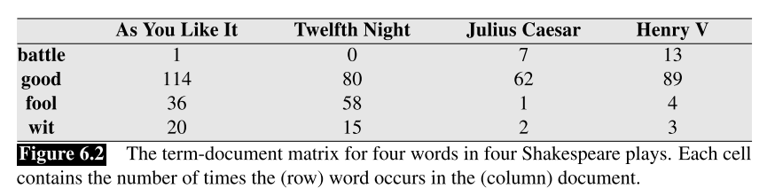
term-term co-occurence matrix则更常用于作为词的特征，矩阵大小一般是|V|*|V|。
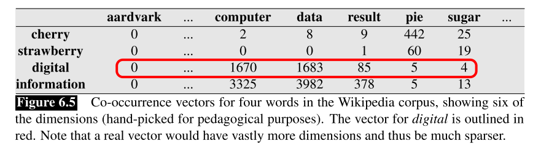
Tf-idf 模型
考虑term-document matrix, 我们想讲term出现的频率作为document的特征，但是这合理吗？有一些词比如good在所有的document中都出现了很多次，但是像fool就只在部分document中出现，那么显然fool就比good更加有判别力，是个更重要的特征。
首先是term frequency:
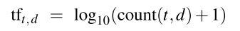
很好理解，就是term在document中出现的次数再压缩一下。
然后是inverse document frequency:
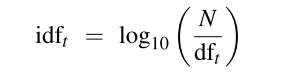
N是所有document的个数，df是某个词某个term出现过的document的个数，比如下图中document总共就四个,N=4,good在四篇文章中都出现过，因此df=4，idf计算出来等于0。
最后：
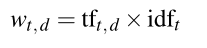
想法就是，我现在想要用document出现了哪些单词作为特征，但如果有一个单词你所有document都出现了，那么我认为你这个特征对于区分document没啥帮助，我就舍弃这个特征。
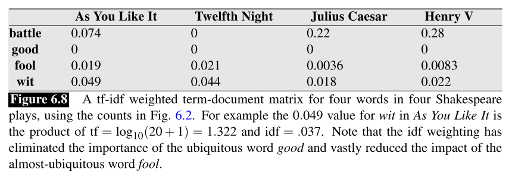
利用co-occurence matrix矩阵作为词汇特征还是有很多问题，比如词汇表通常很大，所以特征维度就会很大，并且容易出现稀疏问题，因此并不是一种很好的特征表示方法。
Word2vec
下面我们要使用一个short(50-1000维)并且dense(大多数维非0)的向量来作为单词的表征，这样的向量维度小容易学习并且dense的属性也好易于捕捉一些语义属性。
词嵌入的概念最早提出是在Bengio在2003年发表在JMLR上的论文，是用神经网络来训练语言模型。语言模型最初是用来评估一个句子的合理性，即它出现的概率或者说是一个合理的句子的概率有多大，可以用来在语音识别解码时挑选最合理的句子，一个句子的概率可以看成一堆条件概率的乘积：
我们对概率进行一定的近似：
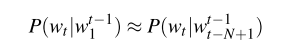
即下一个词出现的概率只跟前面的n个词相关。
那么，如果要设计一个神经网络来做语言模型，我们该怎么做？下图是Bengio的做法。
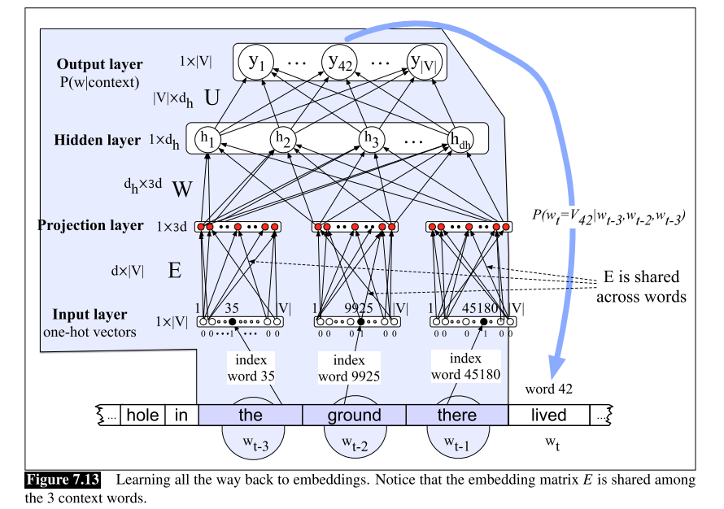
把每个词的one-hot乘以词嵌入矩阵，也就是|V|*|d|大小的参数矩阵，转换成词向量，再继续过两层全连接进行分类。E矩阵和U矩阵都可以用来做词嵌入矩阵。其实Bengio的本意是想做神经网络语言模型，词嵌入矩阵只是副产品。
而2013年word2vec现世，word2vec和NNLM架构类似，只不过训练的目的就是为了获取词向量矩阵，因此它提出了两种训练任务和两种训练方法。两种训练任务是CBOW和skip-gram，CBOW的想法就是根据上下文词去预测中心词，skip-gram的想法就是根据中心词去预测周围词的分布。两种训练方法是negative sampling和hierarchical softmax, 后一种不常用还麻烦，主要介绍skip-gram with negative sampling(SGNS)。
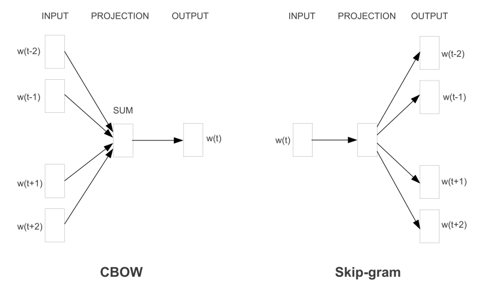
skip-gram原始的做法是center word的one-hot乘以输入词向量矩阵获得中心词的词向量，再拿中心词的词向量和输出词向量矩阵中的每个词内积作为相似分数，最后进行softmax得到概率分布。这样的问题就是每个训练样例都需要进行|V|次内积操作，运算量非常大。因此作者提出了negative sampling。与直接预测周围词的分布不同，我们选取一个center word和另外一个word，判断另外一个word是不是在center word的周围，这样训练一次只需要进行一次向量内积，实际训练的时候，真实的周围词作为正样例，再根据词频进行采样出随机词作为负样例。如下图所示：
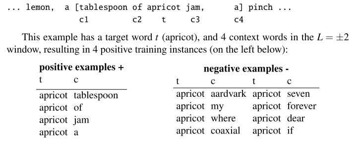
采样负样例的计算公式：
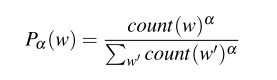
$\alpha$一般0.75，负样例的个数作者建议对小数据集，一个正样例配5-20个负样例，大数据集则配2-5个负样例。
2.后词向量时代
总结一下上述的内容，用神经网络学习word embedding就是利用语言模型这一训练任务去训练得到词向量矩阵，每个词有其对应的词向量，以此来迁移到下游的nlp任务中作为一个token的单独的语义表征。但为什么word embedding之前没有那么火热呢？主要是因为多义词问题。
1 | 1.我喜欢吃苹果。 |
由于word embedding针对每一个特定的词只产生一个词向量，所以苹果公司和水果苹果的语义势必会混淆在一个语义向量里，对于其本身的语义和下游任务来说都是一个很大的问题。对于多义词问题，也有很多研究人员提出了解决方案，但ELMo以一种更简洁优雅的方法解决了多义词问题。后续像GPT、BERT、XLNet等预训练模型也相继涌现，成就了现在NLP预训练领域的后词向量时代。
关于预训练来说，这个给预训练下一个简介的定义：
所以，重要的其实就是预训练任务和预训练模型(特征提取器)。就预训练任务来说，XLNet的论文里把现在的语言学预训练任务分成了Autoregressive LM和Autoencoding两类，autoregressive model在统计学里指一类随机过程，这类随机过程里我们可以根据过去的值和序列去预测将来的序列行为，放在语言学里也就是语言模型，根据上文或者下文去预测下一个词，像ELMo、GPT都属于典型的AR；而另一类autoencoding和autoencoder模型的概念有点类似，是想要去重建原始序列，类似BERT，它把原序列一些词汇mask掉然后重建原序列。但归根结底，这些预训练任务都是利用词汇的上下文词汇去预测词汇，也和 词汇的语义由它周围的其他词的分布决定 的理论相同，可以理解成广义上的语言模型。
主流预训练模型之间的区别
刚才提到预训练的主要区别就在预训练任务和模型的选择上，那么我们进行一个简单的比较。
| 模型 | 预训练任务 | 特征提取器 | 参数量 | 训练数据集 | 训练时间 |
|---|---|---|---|---|---|
| ELMo | 双向语言模型 | Bi-LSTM | 93.6M | 1 billion(1B Word Benchmark) | 无 |
| GPT | 单向语言模型 | Transformer | 110M | 1 billion(BookCorpus dataset) | 无 |
| BERT | mask language model | Transformer | 110M/340M | 3.3 billion(BooksCorpus and Wikipedia) | 16\64 TPU chips 4 days |
| XLNet | permutation language model | Transformer-xl | 110M/340M | 3.3billion(base) / 32.89 billion(large) | 512 TPU v3 chips 2.5 days(large) |
简单的总结，预训练任务上选择双向语言模型是很重要的，这让模型可以从上下文学到很多信息，像mask lm和permutation lm其实都是双向语言模型的变种，可以同时利用上文和下文的信息。而特征处理器上，不用说，transformer独占鳌头。最后，BERT和XLNet的参数量都很大，训练的语料库都很大，因此训练时长也很长，XLNet-large的语料库达到了惊人的32.89billion，花费的训练资源也是惊人。不说了，更大更深更强的模型，更适合的预训练任务以及更多的训练数据，这些都很重要。